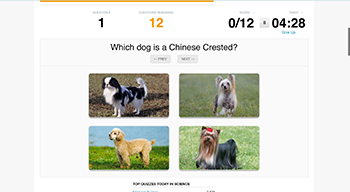
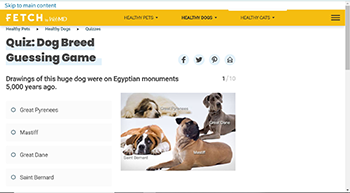

Comparison Project 1

Sporcle
Sporcle is a website that is dedicated to fun quizzes that people can use to pass time or learn new things. One of the quizzes offered is titled “When given the name of a dog breed, can you pick the image of the correct dog?”. There is a question prompted as well as four images of dogs to choose from. I think the inclusion of both the score and the percentage is nice as they provide two ways of measuring success. I like that the image has a green tint to signify that you got the answer correct. It is subtle but the intention is obvious. Similarly, if you choose the wrong image, a red tint is added and a green tint is added to the correct answer but the change is fairly quick and I was not able to notice that it was identifying both the wrong and right answers. The score and timer are given a higher visual hierarchy than the action area, so my attention gets pulled away often. I think the question should be bolded and the rest could be regular weight but to help it stand out, the font could be a bright color.
Comparison Project 2

Fetch
Fetch is also home to a dog breed guessing game but this is formatted more like a quiz. As you progress through the quiz, after the round is played, the user is given more information about the dog in question. Additionally, it tells you whether you are correct or incorrect and the correct answer. The correct answer is placed under the status of the question but my attention was immediately directed to the chunk of text to learn the answer. I think that the right column should mention the correct answer and then the facts about the breed. I like that images of the breeds are displayed with the names so that users are able to see what they look like. I wish that the image of the dog would be included in the facts screen as well just to make the mental connection between the name and looks.
Project Goals
My goal for this project is to create a fun way to learn the names of the dogs at my local dog park. With the growing number of members, it is hard to keep track of who is who. I want to turn this into a card matching game to not only memorize names, but work the brain to remember location of the cards as well.
My topic is similar to that of the compared projects, except that I will be using names instead of breeds. I plan on using a score and timer system similar to the other websites but will steer away from the quiz format to make the game more interactive. My project will also be personalized to fit the location of the park that is the subject of the theme. After studying the other websites, I think I will implement a similar system of making it clear if the user was correct or incorrect.
Design Strategies
The Forest Pog Park is connected to a school whose colors are green and yellow. I will be using those same colors throughout the design. The green also functions to remind users of grass and nature that is often found in parks. The design will be simple and work from simple shapes to make any imagery and layout. The typeface is Roboto, a sans-serif font that is easy to read and places more focus on the imagery as it is very simple. The dark-colored, left side will be a home to instructions and any buttons. The right side will be white with cards and scores placed on top. This side will be larger and interactive so as to keep the focus on the game.
Interaction Strategies
Once the user has read the instructions and is ready to play, they will click the button ‘Let’s Play’ which will change the graphic on the left to the card system. A timer will countdown from one minute. If the user clicks on a card, the card flips to show what was hidden. An audio file that sounds like paper turning will play. The card will stay flipped until another card is flipped. Then both cards will stay flipped for three second to give the user time to register if they have made a match or not. If they make a match, the cards will be tinted green, else they will be tinted red. When the timer goes down to less than 10 seconds, it will flash by changing in color. Once the game finishes, a score will be displayed as well as an image of the dogs playing together. To play again, the user can click ‘Play Again’ and the game will reset.
Experience Goals
The end goal for the user is to learn the dogs’ names and have fun! It is a game, whether they are using it to learn or pass time, and therefore the end result should be user satisfaction. I plan on reaching this goal by simplifying the understanding of the game and making any affordances intuitive to the user so that there are fewer confusions. Simple details including color changes and audio effects will add to how the game is played and the rules of the game. As there is no reward for the game other than knowledge and time spent, I will be displaying dog photos on the final score screen to make the users smile and enjoy the playing process.